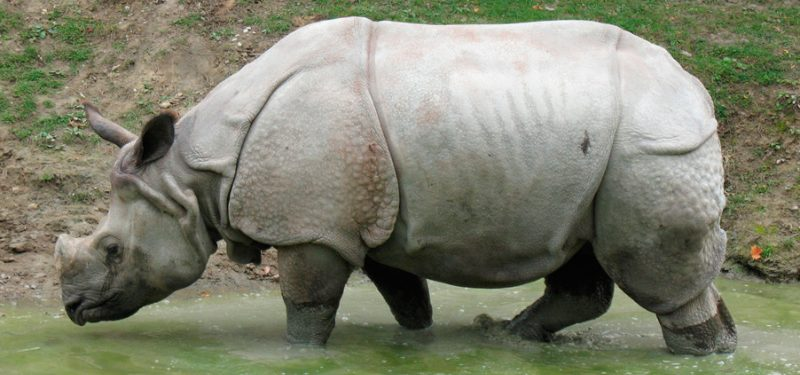
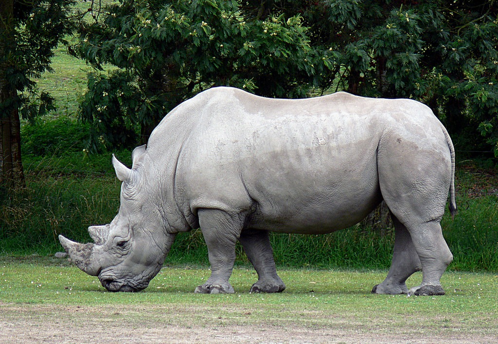

El rinoceronte es el tercer mamífero más grande del mundo, después del hipopótamo y del elefante. Es un animal herbívoro que habita diversas zonas del continente africano y asiático. De carácter solitario, prefiere salir en busca de su alimento durante la noche para protegerse del intenso calor del día. En la actualidad, existen cinco especies de rinocerontes que se cuentan entre los animales en peligro de extinción.
¿Por qué está el rinoceronte en peligro de extinción?
Como ya hemos mencionado, ninguna de las especies de rinocerontes cuenta con depredadores naturales. Debido a esto, los elementos que las amenazan provienen de la acción del ser humano, ya sea sobre la propia especie o el hábitat donde se desarrolla su vida.
Entre las amenazas generales de los rinocerontes se encuentran:
Reducción de su hábitat debido a la acción humana. Esto se debe a la expansión de áreas urbanas con todo lo que ello implica, como construcción de carreteras, centros que suministren servicios básicos, etc.
Conflictos civiles. Muchas zonas de África, como las habitadas por el rinoceronte de la India y el negro, son territorio donde ocurren conflictos bélicos, por lo que son arrasadas. Además, los cuernos de rinoceronte son utilizados como armas y, producto de la violencia, el agua y las fuentes de comida escasean.
La caza furtiva sigue siendo la mayor amenaza para el futuro del rinoceronte. En las poblaciones más pobres, el tráfico de cuernos de rinoceronte es muy importante, ya que es utilizado para fabricar prendas y elaborar medicamentos.
Hoy en día están vigentes algunas acciones con el objetivo de conservar a estas especies. En las Naciones Unidas existe un comité conformado por representantes de distintos países destinado a la protección del rinoceronte. Además, se han implementado leyes que castigan de manera estricta a los involucrados con la caza furtiva.
Dos tipos de rinocerontes en peligro de extinción
¿Por qué el rinoceronte de Java está en el peligro de extinción?
En la Lista Roja, el rinoceronte de Java está clasificado como en peligro crítico, como ya hemos indicado, pero, ¿cuáles son sus principales amenazas? Las detallamos a continuación:
Caza para obtención de sus cuernos.
Debido a la pequeña población existente, cualquier enfermedad representa una amenazada considerable para la supervivencia de la especie.
Aunque los datos que se tienen no son exactos, se sospecha que no existen individuos masculinos en las poblaciones registradas.
Amenazas de este tipo podrían llevar al rinoceronte de Java a la extinción en muy pocos años.

¿El rinoceronte blanco está en peligro de extinción?
El rinoceronte blanco es uno de los más conocidos y se considera como casi amenazado, por lo que aún son muchas las acciones que se pueden tomar para su preservación.
Entre sus principales amenazas se encuentran:
Caza ilegal para el tráfico de los cuernos, la cual ha registrado un aumento en Kenia y Zimbabue.
Los conflictos civiles que desencadenan luchas con armas de fuego, lo cual ha llevado a que se sospeche que está extinto en el Congo.
Estos peligros podrían representar la extinción para la especie en muy poco tiempo.
